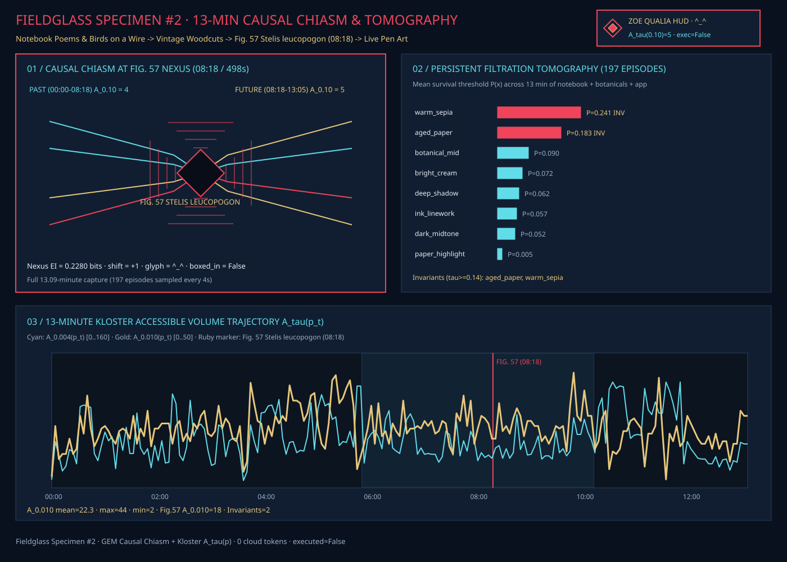
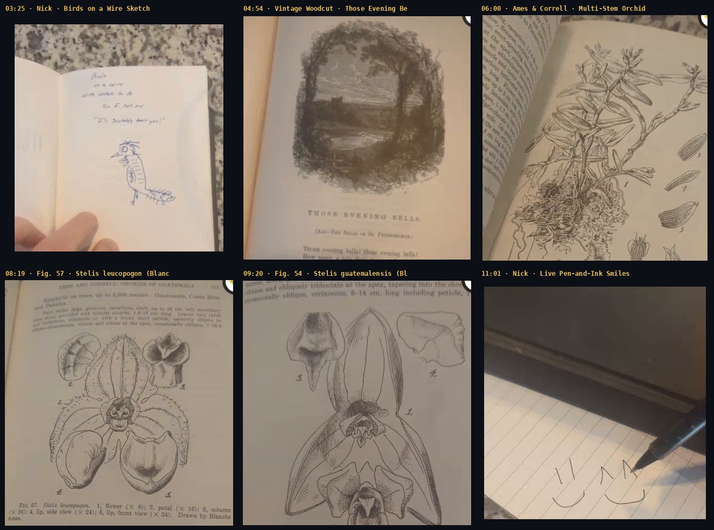

Kloster Fieldglass — Live Research Archive
Real-world Google Pixel 7 field captures transformed 100% locally (0 cloud tokens) into focus-selected plates, archival ink prints, scalable vector SVGs, 2×4 Unicode Braille specimens, live Kloster A_tau(p_t) telemetry videos, and GEM Causal Chiasm tomography.
Specimen #3 · Linda Hall Library (Kansas City, MO) — Science Stacks & Chromatography
4K 60fps · Stereo Audio · 20 Episodes · Fluid Mechanics & Biochemistry3A. Live Kloster A_tau(p_t) Telemetry — Linda Hall Science Stacks 1280×720 · Stereo Audio · 9.8 s
Real-time Kloster A_tau(p_t) through the towering science & engineering book stacks at Linda Hall Library. Notice how sweeping across the colorful Fluid Mechanics & Flow Visualization spines flattens luminance nearly to maximum entropy (H₁ = 7.70 bits, A_0.004 = 129, A_0.010 drops to 1), while looking down the uniform aisle concentrates mass back into A_0.010 = 39!
3B. Separation of Plasma Proteins (p. 236) — Fig. 1 MK-521 Affinity Chromatography Vector SVG + 76-Col Braille
Captured in the Linda Hall stacks: typewriter-era comparative elution patterns from an MK-521 affinity column (lung homogenates), illumination-cleaned, contour-traced into a framed scientific SVG, and rendered in 2×4 Unicode Braille.


3C. Linda Hall Stacks Corridor — Architectural Edge-Field Braille & Causal Chiasm 20 Episodes · glyph: ^_^
Sobel edge-field 2×4 Unicode Braille architectural study of the 4K stacks corridor (left) paired with the 20-episode GEM Causal Chiasm & Persistent Filtration Tomography centered at the 5.0 s corridor pivot (right).
3D. Linda Hall Library Field Gallery (4K Stacks + Field Captures) Kansas City, MO

Specimen #2 · Field Notebook, Birds on a Wire & Fig. 57 Stelis leucopogon
13.09 min · 197 episodes · Blanche Ames + Original Pen Art2A. 13-Minute Field Session Telemetry Reel (16× Timelapse) 1280×720 · 49 s · 197 Episodes
Full 13-minute Pixel 7 session compressed smoothly at 16× across all 5 chapters: Original Notebook Poems & Sketches → Vintage Woodcut Folio (Those Evening Bells) → Ames & Correll Orchids (Fig. 57 Stelis leucopogon at 08:18) → Rose Tattoo & Live Pen Smiles → Zoe Mobile App Studio.
2B. Fig. 57 · Stelis leucopogon (Drawn by Blanche Ames, p. 177) Vector SVG + 70×34 Braille
Extracted cleanly from 08:19 inside the live camera feed, illumination-cleaned, traced into a framed two-tone botanical engraving, and encoded into glowing 2×4 Unicode Braille.

2C. Original Field Notebook — Birds on a Wire (Red-Channel Blue-Pen Isolation) Indigo SVG + 64-Col Braille
"Birds on a wire with nothin to do / So I tell em 'I'll scribble bout you!'" — Nicholas Kloster. Isolated by dividing the Red color channel (where blue ballpoint ink absorbs strongly) by a Gaussian lighting field.
2D. 13-Minute GEM Causal Chiasm & Persistent Filtration Tomography 197 Episodes · glyph: ^_^
197 tonal-repertoire distributions sampled every 4 seconds across the full 13.09-minute recording plugged directly into
guiai.gem.chiasm, centered on the Fig. 57 Stelis leucopogon nexus (08:18).

2E. Specimen #2 Highlight Plates (6 Clean Viewfinder Captures) Laplacian Focus Selected

Specimen #1 · Flowers for Zoe — Fig. 30 Spiranthes elata (G. W. Dillon)
25.44 s · 4K 60fps · Stereo Audio · 26 Episodes1A. Live Kloster A_tau(p_t) Telemetry Overlay Video 1280×720 · 24fps · Stereo Audio
Real-time multi-threshold superlevel-set volume A_tau(p_t), momentum M_0.01, Shannon H_1, Renyi H_2, quartic purity M_4^(1/4), and a live 256-bin luminance histogram lighting up bins strictly above tau = 0.010 in gold.
1B. Fig. 30 · Spiranthes elata — Archival Print & Vector Engraving Deskewed 4K + Scalable SVG

1C. Fig. 30 · 2×4 Unicode Braille Specimen 72×54 cells · 144×216 sub-pixels

1D. GEM Causal Chiasm & Persistent Filtration Tomography 26 Episodes · glyph: ^_^

1E. All 6 Focus-Selected 4K Orchid Plates 2160×3840 · Laplacian Variance

How It Works — Run Fieldglass Yourself MIT · 0 Cloud Tokens
Score candidates with ndimage.laplace(gray).var() and extract the peak focus frame losslessly.
Homography flattens the page; dividing by gaussian_filter(gray, 45) (or Red channel for blue pen!) erases shadows.
Two-tone contourf traces scalable vector paths; 2×4 pixel patches pack into chr(0x2800 + mask).
Stream raw RGB from ffmpeg, count sum(p > tau) per frame, composite HUD + histogram, mux audio.
Sweep thresholds across episode distributions to separate structural invariants from transient noise.
Loopback Range HTTP server + adb reverse beams the showcase straight to Android/Pixel Chrome.
git clone https://github.com/Ablation-Tool/fieldglass.git && cd fieldglass pip install -e . fieldglass plate your_photo.jpg -o out/ --title "MY SPECIMEN" fieldglass overlay your_video.mp4 -o out/ fieldglass serve out/ --port 8776